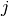

Note
The code for this section is available for download here.
To plot a sample, what we need to do is to take the visible units, which are a flattened image (there is no 2D structure to the visible units, just a 1D string of unit activations) and reshape it into a 2D image. The order in which the points from the 1D array go into the 2D image is given by the order in which the inital MNIST images where converted into a 1D array. Lucky for us this is just a call of the numpy.reshape function.
Plotting the weights is a bit more tricky. We have n_hidden hidden units, each of them corresponding to a column of the weight matrix. A column has the same shape as the visible, where the weight corresponding to the connection with visible unit  is at position . Therefore, if we reshape every such column, using numpy.reshape, we get a filter image that tells us how this hidden unit is influenced by the input image.
We need a utility function that takes a minibatch, or the weight matrix, and converts each row ( for the weight matrix we do a transpose ) into a 2D image and then tile these images together. Once we converted the minibatch or the weights in this image of tiles, we can use PIL to plot and save. PIL is a standard python libarary to deal with images.
Tiling minibatches together is done for us by the tile_raster_image function which we provide here.
def scale_to_unit_interval(ndar,eps=1e-8):
""" Scales all values in the ndarray ndar to be between 0 and 1 """
ndar = ndar.copy()
ndar -= ndar.min()
ndar *= 1.0 / (ndar.max()+eps)
return ndar
def tile_raster_images(X, img_shape, tile_shape,tile_spacing = (0,0),
scale_rows_to_unit_interval = True, output_pixel_vals = True):
"""
Transform an array with one flattened image per row, into an array in
which images are reshaped and layed out like tiles on a floor.
This function is useful for visualizing datasets whose rows are images,
and also columns of matrices for transforming those rows
(such as the first layer of a neural net).
:type X: a 2-D ndarray or a tuple of 4 channels, elements of which can
be 2-D ndarrays or None;
:param X: a 2-D array in which every row is a flattened image.
:type img_shape: tuple; (height, width)
:param img_shape: the original shape of each image
:type tile_shape: tuple; (rows, cols)
:param tile_shape: the number of images to tile (rows, cols)
:param output_pixel_vals: if output should be pixel values (i.e. int8
values) or floats
:param scale_rows_to_unit_interval: if the values need to be scaled before
being plotted to [0,1] or not
:returns: array suitable for viewing as an image.
(See:`PIL.Image.fromarray`.)
:rtype: a 2-d array with same dtype as X.
"""
assert len(img_shape) == 2
assert len(tile_shape) == 2
assert len(tile_spacing) == 2
# The expression below can be re-written in a more C style as
# follows :
#
# out_shape = [0,0]
# out_shape[0] = (img_shape[0]+tile_spacing[0])*tile_shape[0] -
# tile_spacing[0]
# out_shape[1] = (img_shape[1]+tile_spacing[1])*tile_shape[1] -
# tile_spacing[1]
out_shape = [(ishp + tsp) * tshp - tsp for ishp, tshp, tsp
in zip(img_shape, tile_shape, tile_spacing)]
if isinstance(X, tuple):
assert len(X) == 4
# Create an output numpy ndarray to store the image
if output_pixel_vals:
out_array = numpy.zeros((out_shape[0], out_shape[1], 4), dtype='uint8')
else:
out_array = numpy.zeros((out_shape[0], out_shape[1], 4), dtype=X.dtype)
#colors default to 0, alpha defaults to 1 (opaque)
if output_pixel_vals:
channel_defaults = [0,0,0,255]
else:
channel_defaults = [0.,0.,0.,1.]
for i in xrange(4):
if X[i] is None:
# if channel is None, fill it with zeros of the correct
# dtype
out_array[:,:,i] = numpy.zeros(out_shape,
dtype='uint8' if output_pixel_vals else out_array.dtype
)+channel_defaults[i]
else:
# use a recurrent call to compute the channel and store it
# in the output
out_array[:,:,i] = tile_raster_images(X[i], img_shape, tile_shape, tile_spacing, scale_rows_to_unit_interval, output_pixel_vals)
return out_array
else:
# if we are dealing with only one channel
H, W = img_shape
Hs, Ws = tile_spacing
# generate a matrix to store the output
out_array = numpy.zeros(out_shape, dtype='uint8' if output_pixel_vals else X.dtype)
for tile_row in xrange(tile_shape[0]):
for tile_col in xrange(tile_shape[1]):
if tile_row * tile_shape[1] + tile_col < X.shape[0]:
if scale_rows_to_unit_interval:
# if we should scale values to be between 0 and 1
# do this by calling the `scale_to_unit_interval`
# function
this_img = scale_to_unit_interval(X[tile_row * tile_shape[1] + tile_col].reshape(img_shape))
else:
this_img = X[tile_row * tile_shape[1] + tile_col].reshape(img_shape)
# add the slice to the corresponding position in the
# output array
out_array[
tile_row * (H+Hs):tile_row*(H+Hs)+H,
tile_col * (W+Ws):tile_col*(W+Ws)+W
] \
= this_img * (255 if output_pixel_vals else 1)
return out_array